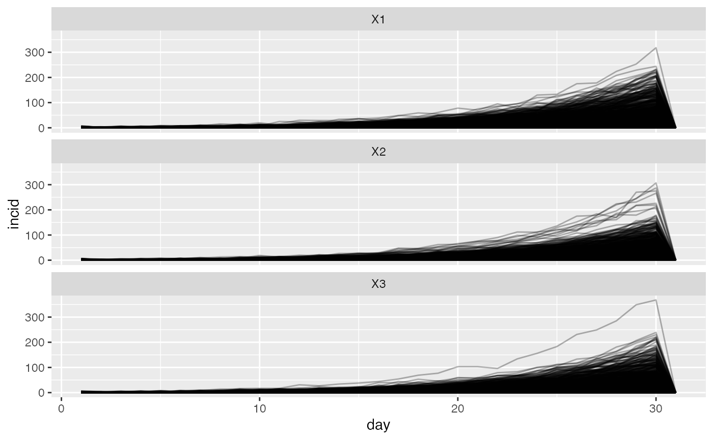

Simulating outbreaks under a spatially explicit branching process
Source:vignettes/simulating-data.Rmd
simulating-data.Rmd#> Warning: replacing previous import 'Rcpp::LdFlags' by 'RcppParallel::LdFlags'
#> when loading 'spatialbranchr'The model implemented in spatialbranchr relies on a well-established statistical framework that assumes the daily incidence, \(I_t\) , can be approximated with a Poisson process following the renewal equation :
\[\begin{equation} I_{t} \sim Pois\left( R^{t} \sum_{s = 1}^{t}{I_{i}^{t - s} \omega_{s}} \right). \label{eq:likelihood1} \end{equation}\]
Here \(R^t\) is the reproduction number at time \(t\) (the average number of secondary cases per infected individual) and \(\omega\) is the distribution of the serial interval (the time between onset of symptoms in a case and their infector).
We extend this model to incorporate the spatial spread of the outbreak between \(n\) different locations. We assume that the number of incident cases at a location \(j\) at time \(t\) is given by the equation
\[\begin{equation} I_{j}^{t} \sim Pois\left( \Lambda_{j}^{t} \right), \label{eq:likelihood2} \end{equation}\]
where \(\Lambda_{j}^{t}\) is the total infectivity at a location \(j\) at time \(t\). \(\Lambda_{j}^{t}\) is the sum of infectivity at all locations weighted by the relative flow of cases into \(j\) from each location \(i\). That is,
\[\begin{equation} \Lambda_{j}^{t} = \sum_{i = 1}^{n} {\left( p_{i \rightarrow j} R_{i}^{t} \sum_{s = 1}^{t}{I_{i}^{t - s} \omega_{s}} \right)}. \label{eq:biglambda} \end{equation}\]
\(R_{i}^{t}\) is the reproduction number at location \(i\) at time \(t\) and \(p_{i \rightarrow j}\) is the probability of a case moving from location \(i\) to location \(j\) while they are infectious. \(\omega\) is the typical infectiousness profile of a case over time after infection.
We illustrate the model by simulating incidence for three locations under various assumptions of population movement between the three places.
No movement
If we don’t allow any movement between the three locations, we are in effect simulating three independent outbreaks.
locations <- c("A", "B", "C")
## Movement matrix, all off-diagonal elemnets are 0.
pmat <- matrix(0, nrow = 3, ncol = 3)
diag(pmat) <- 1
## Initial Rt in the three locations
r_init <- matrix(rep(2, 3), nrow = 1, ncol = 3)
## Initial incidence, start with a large seed so that the epidemic can
## take off.
incid_init <- matrix(rep(20, 3), nrow = 1, ncol = 3)
si <- EpiEstim::discr_si(k = 0:30, mu = 6, sigma = 4)
no_movement <- spatial_project(
incid_init, r_init, si, pmat, n_sim = 1000, n_days = 30,
model = "poisson"
)
no_movement_df <- as_dataframe(no_movement)
tall <- gather(no_movement_df, location, incid, -sim, -day)
ggplot(tall) +
geom_line(aes(day, incid, group = sim), alpha = 0.3) +
facet_wrap(~location, nrow = 3)
Allow movement
We will now modify the probability of movement to allow for some movement between locations.
puni <- matrix(
c(0.8, 0.1, 0.1, 0.2, 0.3, 0.5, 0.3, 0.3, 0.4), nrow = 3, ncol = 3
)
uni_movement <- spatial_project(
incid_init, r_init, si, puni, n_sim = 1000, n_days = 30,
model = "poisson"
)
uni_movement <- as_dataframe(uni_movement)
tall_uni <- gather(uni_movement, location, incid, -sim, -day)
ggplot(tall) +
geom_line(aes(day, incid, group = sim), alpha = 0.3) +
facet_wrap(~location, nrow = 3)
priors <- spatial_priors()
##out <- spatial_estimate(uni_movement, si, 7, puni, priors = priors)